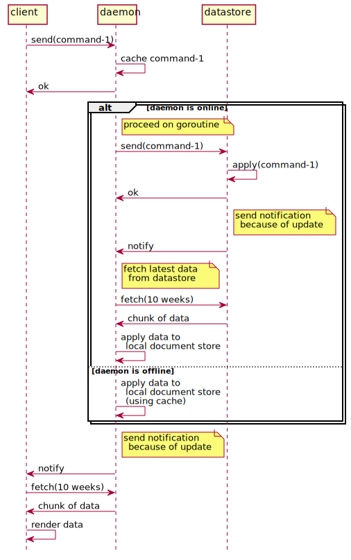

daemon
overview
- Daemon has responsibility for
- Receive requests from front end.
- Caches commands and reflect them to local document store for working without network.
- Send chunk of commands to datastore for syncing.
- Receive chunk of data to sync with datastore.
sync with datastore
- Daemon has a document store to cache commands from front end, and store data from datastore.
- Periodically, daemon tries to perform syncing local data with datastore.
- Send local commands, that are "not synced yet", to datastore.
- Retrieve chunk of data. They are JSON formatted and represent "1 week of data", for example.
- Daemon stores 10 weeks of data in local document store.

gRPC API
Hashira Service
- send(array of command)
- sends specified commands.
- retrieve(from, to (number of weeks)) array of task
- returns array of task with specified term.
- send(array of command)
command and related enumeration
what (enum)
| enum | remarks |
|---|---|
| new | create a new task |
| update | update state of a task |
command (structure)
| field | type | remarks |
|---|---|---|
| what | enum of what | new, update, etc. |
| payload | string | JSON formatted string how to treat what. |
command handling
- When daemon receives commands, cache them and return ok immediately.
- If daemon is online, send cached commands to datastore.
- When datastore receives commands and succeed to apply them, datastore sends notification to daemon.
- At daemon receiving notification, retrieve chunk of data from datastore for syncing.
- When daemon succeed to apply them, daemon sends notification to front end.
- At front end receiving notification, retrieve chunk of data from daemon.
When front end succeed to retrieve chunk of data, render them.
If daemon is offline, postpone to send commands to datastore.
- Instead, daemon applies the cached commands to local document store, and send notification to front end as same as written above.
